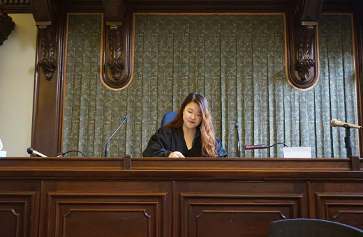
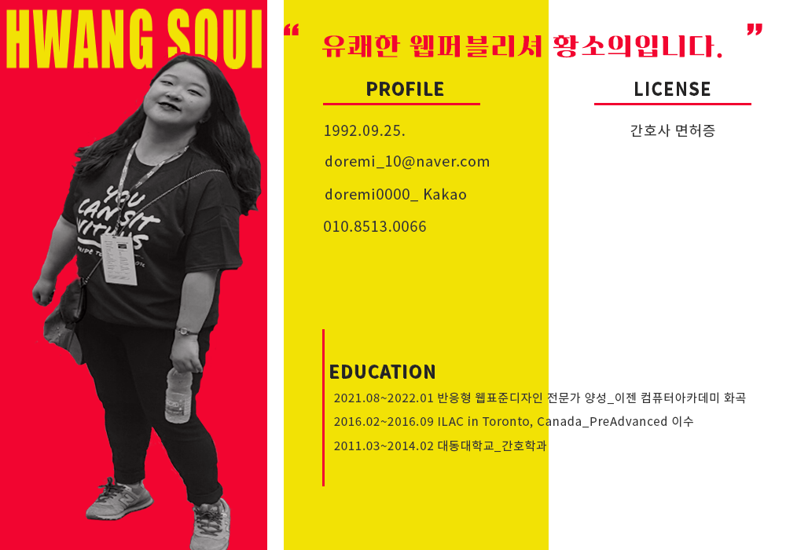
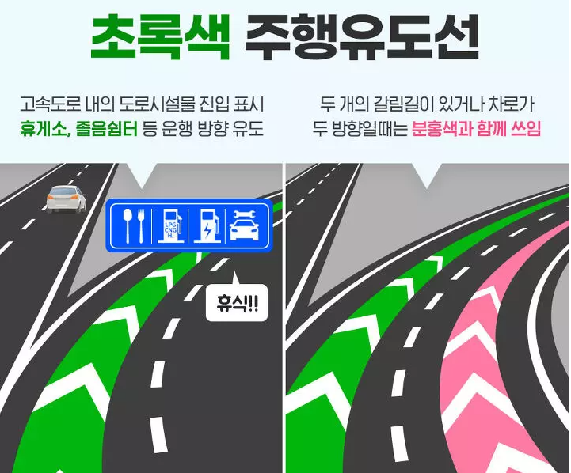
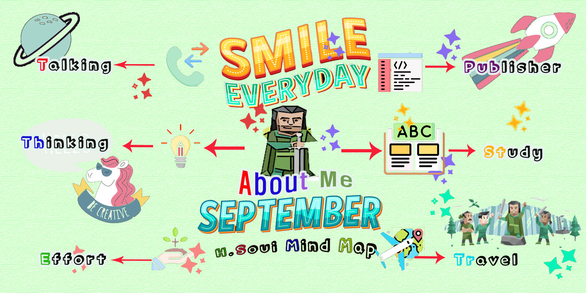
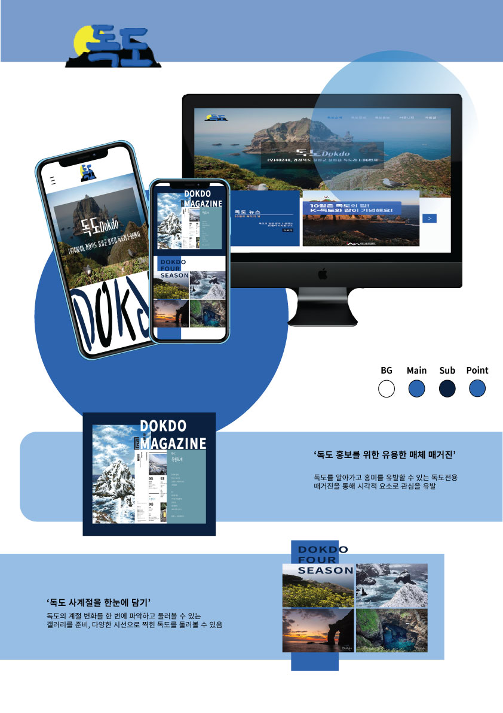
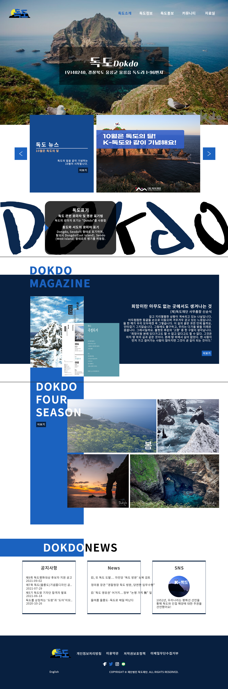
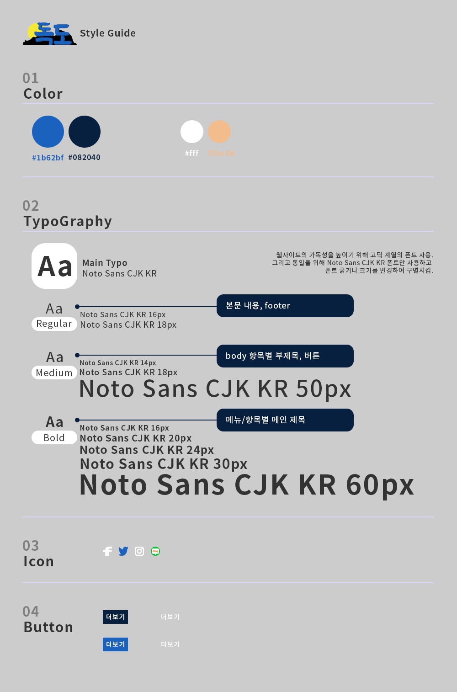

-
#UX기획
문제를 파악하고 해결하는 과정을 기획
-
#UI 디자인
사용자경험을 기반으로 심미적 요소를 함께 조화시킴
-
#구현
구조적인 HTML과 알기 쉬운 CSS로 웹코딩과 Javascript를 통한 웹페이지 구현
로딩중
Hwang Soui
Creative Publisher
#트렌드 #창의성 #기획화 #구조화 #웹퍼블리셔 #황소의
트렌드한 디자인에서부터 기발한 아이디어를 자연스럽게 스며들게 기획하여 시멘트 웹페이지를 구축합니다.
이야기를 처음부터 끝까지 함께 완성할 준비가 되어있습니다.
스크롤바를 내리면 작품을 감상할 수 있습니다.
ABOUT ME
혼자하면 100%, 함께하면 1000%
언제나 준비되어 있는 웹퍼블리셔
자신의 자리에서 최선을 다하기 위해 기본에 기본을 잊지 않으려고 노력합니다.
'문일지십, 하나를 배우면 열을 안다.' 전 열 개까지 할 정도로 똑똑하진 않습니다.
하지만, '문일지이' 두 개까지 가능합니다. 그렇게 차근차근 세 개에서느
앞의 두 개로 활용을 하고
네 개부터는 앞의 세 개를 쌓아 올려 비교하고 다섯 개부터는 노하우를 만들겠습니다.
하지 못 할 일은 없듯이 언제나 성실하게 지치지 않는 에너지로 활력이 되고
그 힘으로 자연스럽게 팀에 녹아들겠습니다.
사용가능한 프로그램
- HTML5
- CSS3
- SASS
- jQuery
- 포토샵
- 일러스트
- AdobeXD
탁월한 UX분석능력과 Emmet/Zencoding 활용
-
UX/UI 디자인
꼼꼼한 사용자 분석을 통한 문제를 해결하고
다양한 방법을 통한 디자인 도출 -
반응형 웹표준
시멘틱을 지향하는 HTML/CSS 작성능력 보유,
자바스크립트와 제이쿼리 기반의 로직 구현 가능
SASS 전처리기와 jquery를 통한 로직 구현
-
Sass Preprocessor
협업 웹코딩의 필수 기술인 SCSS를 이용한
CSS 스타일링을 원활이 사용할 수 있습니다. -
jquery
웹코딩의 실현의 필수인 jquery를 통한 로직 구현 가능
나의 특별한 능력
젠코딩
HTML5
CSS
jQuery
웹기획
디자인
95%
리더쉽
적극성
창조성
사교성
책임감
센스
온라인 이력서

내가 생각한 것을 현실화 하고 싶어 시작한 코딩의 길에 최선을 다하고 있습니다.
원하는 주제에 맞게 처음부터 끝 마무리까지 기획하고 분석하여 구현할 수 있습니다.
주어진 일에는 책임을 가지고 포기하지 않고 시도하고 확인하는 열정도 있습니다.
'오늘 하고 내일 하고 매일 하자' 라는 마음으로 임하고 새로운 것에 두려워 하지 않겠습니다.

WORK STYLE
- 구조와 디자인, 기능을 분리한 MVC패턴을 구현
- 자바스크립트와 jQuery를 구현
- HTML5 시멘틱과 CSS3 웹페이지를 구현
주위 사람들이 말하는 나
-
은민
두려움을 모르는 열정인뭐든 적극적인게 신기하다. 항상 보면 뭘 하고 있고 가벼운 일에도 크게 배워와서 다양하게 써먹는 것 같다. 나도 옆에서 많은 일들을 같이 하고 함께 해서 덩달아 기분이 좋아진다.
-
인영
어디 가서든 잘 어울리는 인싸어느 모임이든 사람을 편하게 해주고 분위기를 이끌어 간다. 센스있게 상대방이 무엇이 필요한지 파악하고 어떻게 해줘야 하는지 잘 아는 친구. 그래서 같이 있으면 언제나 마음이 편하다.
-
민철
항상 웃고있음항상 낙엽이 굴러가는 것만 봐도 즐거운 사람인 것 같음. 코로나 바이러스 사이에서 혼자서 해피 바이러스 가지고 사는 듯 하다. 그냥 찐 웃음이라서 웃는 얼굴에 침 못뱉게 만든다.
PORTFOLIO
필요한 기능을 직접 javascript/jquery 로직 구현
기본을 배워서 사이트를 살리는 코딩을 합니다.
HTML5 & CSS3 시멘틱 페이지를 SCSS, ZenCoding(EMMET)으로 작성할 수 있습니다.
필요를 맞춘 UX, 심미적 요소를 맞춘 UI 디자인을 통해 저를 표현합니다.
JS 플러그인을 사용에 그치지 않고 필요한 기능을 직접 구현할 수 있는 Javascript/jQuery 로직구현이 가능합니다.
for문과 다중 if문의 결합한 로직 구현
SASS, Emmet 활용
페이지 전체의 계층구조를 입체적으로 분석할 수 있는
실무형 코딩기법 Emmet을 사용할 수 있어 업무시간을 단축시킬 수 있을뿐 아니라,
유지보수도 더욱 쉽고 정확하게 처리할 수 있습니다.
SCSS의 가장 큰 장점인 변수와 Mixin 기능을 적극 활용하여
CSS 스타일링을 할 수 있습니다.
Sprite-Image와 IR(Image Replacement)기법에 능숙
id, class를 남발하지 않고 원하는 요소를 셀렉팅할 수 있는 능력,
CSS3 Transform, Transition, Keyframes을 이용한 애니메이션 효과 구현
직접 구현한 슬라이드
-
좌우이동 슬라이드
슬라이드 구현에 적합한 ul,li,a 태그와 flxe를 사용하여 UI를 구현하였습니다.
슬라이드 보기
또한 자바스크립트로 position의 lef값을 동적으로 변화시켜 이동하도록 하였습니다. 플러그인 없이 직접 구현하였습니다.
-
이전다음 자동실행 슬라이드
이전, 다음 기능을 가진 업그레이드 된 슬라이드로서 사용자 편의성을 향상되었습니다. 제이쿼리의 fadeIn(), fadeOut() API를 이용하여 코드를 구현하였습니다. 플러그인 없이 직접 구현하였습니다.
슬라이드 보기
-
페이드 시작정지 슬라이드
시작, 정지기능이 장착된 슬라이드로서 일관성있게 한쪽 방향에서 다음 슬라이드가 노출되는 기능을 append() API와 콜백함수의 개념을 접목하여 구현하였습니다. 플러그인 없이 직접 구현하였습니다.
슬라이드 보기
UX DESIGN
작품리스트
이전 다음내가 생각하는 사용자경험 - User Experience
지금 눈앞에 있는 많은 볼펜들만 해도 써본 것 중에서 편함, 손에 익음, 잉크의 재질, 색감, 디자인을 따지고 사용하는 것만 사용한다.
혼자만으로도 제품 하나에
대한 의견이 다양한데 많은 사람이 사용하게 할 제품에 자신의 생각으로만 고안한 기획은 의미가 없다.
사용자를 늘리기 위해서는 말 그대로 그만큼 많은 사용자에 대한 경험이 필요하고 그것을 기반으로 분석이 필요하다.
‘필요한 것’이 상위 목표가 된다면 목표 달성 과정은 누가, 언제, 어디서, 무엇을, 어떻게, 왜 라는 세부적인 과정이 필요하고 과정의 카테고리마다 가지를 뻗어나가야 하므로
많은 경험을 필요로 한다.
가령 ‘조금 더 간소화시킨 설명서가 필요해’, ‘메뉴가 사진이 별로야’, ‘저 차는 소리가 이상해’ 등과 같이 일상생활에서 터져나오는 감정을 간과하지 않고 생각을 하고
데이터로 쌓아 구현해내기까지의 과정의 시작이 UX디자인이라고 생각한다.
고속도록 주행유도선

디자인과 UX의 차이
- 1. 종이, 더스트 백
-
브랜드 종이가방이나 더스트 백을 활용하여
자신만의 또 다른 가방으로 업사이클링 한 사례
- 2. 빈 병
-
용기로서 활용이 아닌
시각적 예술화를 돋보이게
조명으로 재탄생
5Whys - 비흡연 구역에서 담배꽁초를 바닥에 버리는 이유
원인-1
하수구 근처에서 담배를 핀다.
원인-2
하수구 있는 주변에 사람이 없다.
원인-3
하수구가 더럽고 냄새가 난다.
원인-4
더러운 오물이나 찌꺼기가 모이는 곳이다.
원인-5
빗물받이인 하수구의 기능이 지상에 있는 오물이 모여 고이게 한다.
솔루션
하수구에 이중덮개를 설치하여 비가 올 때 개방될 수 있도록 하고 '담배꽁초 금지+벌금' 표시를 덮개에 레터링한다.
UI DESIGN
{kind=link}
{kind=link}
{kind=link}
{kind=link}
{kind=link}
{kind=link}
{kind=link}
{kind=link}
함께할 수 있는 디자인을 만들고자 합니다.
디자인이라는 큰 도화지에 제가 그리는 많은 형태들이 홀로 떠 있지 않고 같이 어울어지기를 생각하며 고안합니다
하면 할수록 더 이해를 하고 또 활용을 해내가면서 다시 또 괜찮은 디자인을 지속적으로 생각합니다.
그렇게 저는 처음과 달리 두렵지만 또 어느순간 생각을 하고 있고 또 다음을 준비하고 있었습니다.
대표작품


PROJECT
K-독도 리뉴얼

스타일가이드
